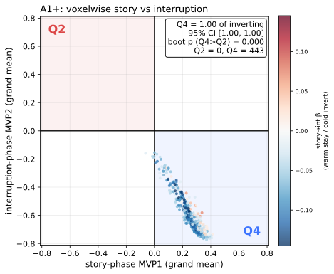
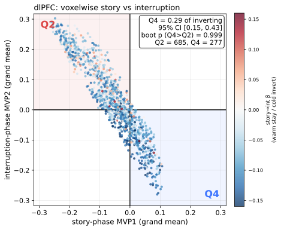
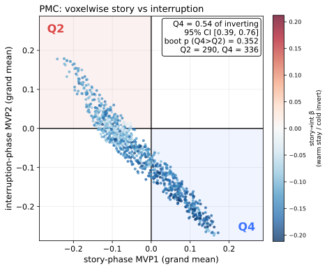

Hemodynamic undershoot is a plausible non-pattern explanation for the negative story-to-interruption inter-subject pattern correlation reported in Results 3.1 and 3.2: voxels with positive blood-oxygenation-level-dependent signal during the story phase dip below baseline a few seconds later as the response decays, producing an apparent sign flip from the story-phase pattern into the early interruption-phase pattern. A pure-undershoot account predicts an asymmetric flip, however — the post-stimulus undershoot acts primarily on voxels that were positive during the story window, driving them below baseline during the interruption window (a story-positive to interruption-negative flip; lower-right quadrant Q4: MVP1 > 0, MVP2 < 0), with no matching flip of story-negative voxels into interruption-positive (upper-left quadrant Q2: MVP1 < 0, MVP2 > 0). The pure-undershoot prediction is therefore an excess of Q4 over Q2 voxels.
Around every interruption onset we built two adjacent multivoxel patterns per ROI. MVP1 was the mean pattern across the ten TRs ending one TR before onset (the story window); MVP2 was the mean pattern across ten TRs starting five TRs after onset (the interruption window, identical to the window used in Results 3.1 and 3.2). Both windows were taken from the whole-run z-scored data, in which each voxel had been z-scored across the entire run. We then averaged MVP1 and MVP2 across all interruption epochs and all participants (pooled across intact-pause, scrambled-pause, and intact-ToM), giving one grand-mean value per voxel on each axis. Each dot in the scatter is one voxel at (grand-mean MVP1, grand-mean MVP2), colored by its within-participant story-to-interruption regression slope (warm = stays the same sign, cold = inverts).
On the grand-mean scatter we counted the inverting voxels in Q2 and Q4 and summarized the asymmetry as the Q4 fraction of inverting voxels, Q4 / (Q2 + Q4); 0.5 means a symmetric flip and 1.0 a pure Q4 (undershoot) flip. Because the grand mean averages over participants, we tested this fraction with a participant bootstrap (5,000 resamples): on each resample the pooled participants were drawn with replacement, the grand-mean scatter was recomputed, and the Q4 fraction re-counted. Resampling whole participants keeps each participant’s within-subject spatial voxel dependence intact and propagates the subject-level sampling variability that a naive voxelwise count would ignore. We report the 95% bootstrap confidence interval of the Q4 fraction and a one-sided bootstrap p that it exceeds 0.5. The pure-undershoot prediction is a Q4 fraction reliably above 0.5 (confidence interval excluding 0.5); a confidence interval spanning 0.5 (Q2 ≈ Q4) rejects the pure-undershoot account. The pooled Q2:Q4 ratio is reported alongside as a descriptive reference.



Each panel shows one dot per voxel: its horizontal position is the grand-mean story-window pattern value (MVP1) and its vertical position the grand-mean interruption-window value (MVP2), averaged across all interruption epochs and all pooled participants. Dots are colored by the within-participant story-to-interruption regression slope (warm = stays the same sign, cold = inverts). The two lightly shaded corners are the inversion quadrants Q2 (upper-left) and Q4 (lower-right); the annotation reports the one-sided participant bootstrap (5,000 resamples) testing that inverting voxels favor Q4 (the undershoot direction). Auditory cortex (A1+) shows the Q4-dominant asymmetry expected of a hemodynamic undershoot, whereas PMC does not.
| ROI | voxels | Q2 | Q4 | pooled Q2:Q4 ratio (reference) | Q4 fraction of inverting voxels [95% participant-bootstrap CI] | bootstrap p (Q4 > Q2, one-sided) | sig | consistent with undershoot? (CI above 0.5) |
|---|---|---|---|---|---|---|---|---|
| A1+ | 447 | 0 | 443 | 0.000 | 1.000 [1.000, 1.000] | 2.00e-04 | *** | yes |
| dlPFC | 1163 | 685 | 277 | 2.473 | 0.288 [0.145, 0.427] | 0.9994 | n.s. | no |
| PMC | 972 | 290 | 336 | 0.863 | 0.537 [0.392, 0.761] | 0.3523 | n.s. | no |
Significance markers: * p < 0.05, ** p < 0.01, *** p < 0.001, otherwise n.s. The final column reads “yes” only when the participant-bootstrap 95% confidence interval on the Q4 fraction lies entirely above 0.5, the operational signature of a pure hemodynamic undershoot.